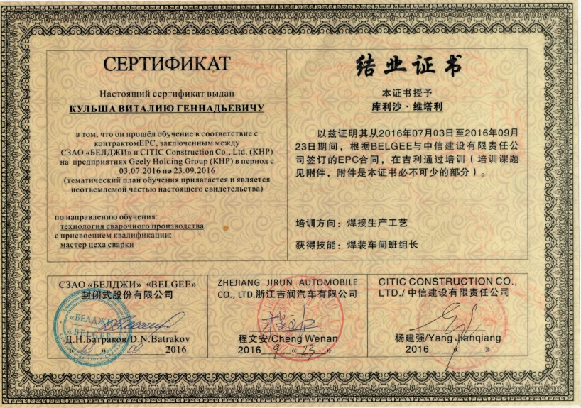
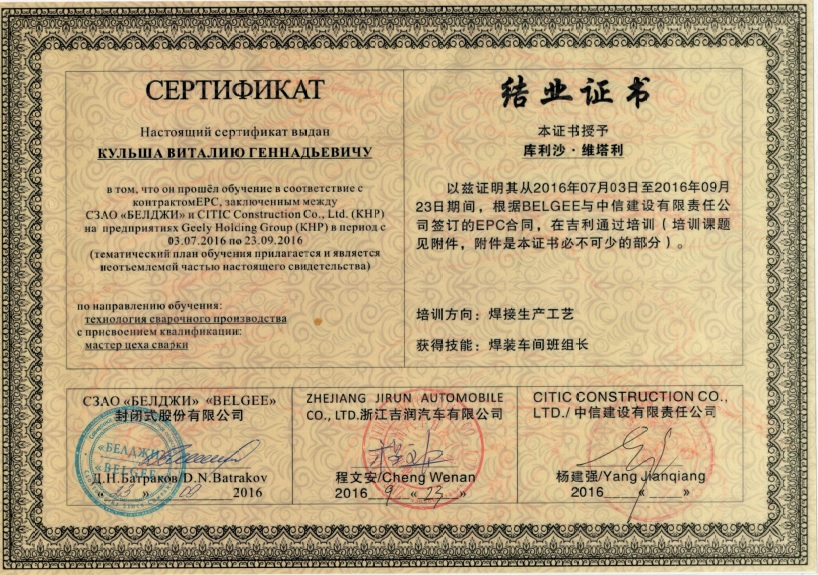

Опыт работы
| август 2005 - февраль 2008 | инженер-конструктор на Кузнечном заводе тяжелых штамповок, г. Жодино |
|---|---|
| февраль 2008 - октябрь 2010 | начальник бюро по разработке управляющих программ для станков с ЧПУ на Кузнечном заводе тяжелых штамповок, г. Жодино |
| октябрь 2010 - май 2012 | инженер-конструктор на Белавтозапчасти, г. Жодино |
| сентябрь 2006 - май 2012 | препадователь спецдисциплин (металлорежущие станки, программирование станков с ЧПУ) в Жодинском государственном политехническом колледже |
| май 2012 - май 2013 | служба в ВС РБ в 62 Центральном узле связи, уволился в запас в звании сержанта |
| май 2013 - январь 2015 | инженер-конструктор на Снекпро, Смолевичский р-н |
| февраль 2015 - июль 2016 | инеженер-технолог на Белавтозапчасти, г. Жодино |
| июль 2016 - август 2019 | мастер цеха сварки на БЕЛДЖИ, Борисовский р-н |
| август 2019 - настоящее время | ведущий инженер-технолог цеха сварки на БЕЛДЖИ, Борисовский р-н |
Мои достижения
Главные профессиональные достижения:
- Участие в республиканском конкурсе профессионального мастерства
В номинации инженер-конструктор победил в 2006 г и занял 2-е место в 2009 г - Неоднакратное повышение по службе
Благодаря быстрообучаемости и усердию - Участие в заводских соревнованиях по улучшению качества
Моя команда заняла второе место

 

Java skills:
- Java Basics
Прошел онлайн-курс в EPAM - Java Starter
Сдал тест на testprovider.com и получил сертификат - Java EE Basics
Прослушал онлайн-курс от ITVDN, сдал тест и получил сертификат - Spring
Прослушал онлайн-курс от ITVDN, сдал тест и получил сертификат - Git
Сдал тест на testprovider.com и получил сертификат - Spring
Прослушал онлайн-курс от ITVDN, сдал тест и получил сертификат - JDBS and Hibernate
Прослушал онлайн-курс от ITVDN, сдал тест и получил сертификат
Мои сильные качества
- Быстрообучаемость
- Усердие
- Ответственность
- Инициативность
- Организованность
- Стрессоустойчивость
Мой принцип
"Сделал дело - гуляй смело"
Обо мне
В школе очень нравилась математика и логические задачки. В техникуме и университете очень понравилось программирование, тогда еще на PASCAL. В один момент осознав, что дальнейшее развитие на имеющейся должности становится не интересным, решил попробовать себя в программировании на JAVA. Очень удачно попались бесплатные курсы в EPAM. Под руководством ментора из EPAM освоил базовый онлайн-курс JAVA - Java Basics. В настояещее время обучаюсь на следующем этапе - в онлайн-лаборатории EPAM Java Basics Upskills. Также прохожу различные бесплатные онлайн-курсы, форумы и марафоны по этой тематике. Очень нравится вместе с женой организовывать праздничные мероприятия для своих друзей, где иногда применяю полученные навыки программрования. В свободное время, когда нет доступа к интернету, читаю литературу, предпочитаю классические детективные романы (Агата Кристи, Артур Конан Дойл).